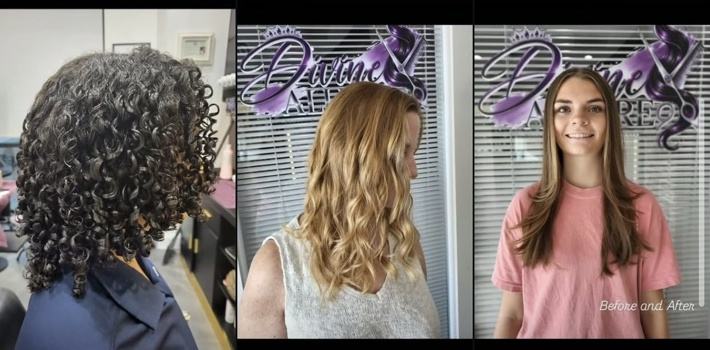

Invisible K-Tip Specialist · Houston & Fort Bend County
Luxury hair.Invisible confidence.
Beauty • Confidence • Elevated
Invisible K-Tip extensions, beautiful color and precision cuts by Carmen of Divine Allure.
Signature services
Designed around you.
Invisible K-Tips are the featured specialty, with Carmen's color and cut services supporting the complete look.
Invisible K-Tips
Consultation-led extensions designed for a discreet, natural-looking blend.
Color
Personalized color designed around your look.
Cuts
Shape, movement and finishing with healthy hair at the center.
Meet Carmen
14 years of beauty, confidence & craft.
Carmen is the stylist behind Divine Allure, specializing in healthy hair, color, cuts and K-Tip extensions.
“It’s not just hair. It’s confidence, self-love, and a better you.”
The Divine Allure look
Hair that moves like you.

Ready when you are
Your K-Tip consultation starts here.
Start with a consultation so Carmen can understand your hair, desired look and maintenance goals.
Book via Vagaro